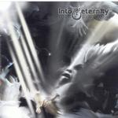

| Artist: | Into Eternity |
| Title: | Into Eternity |
| Label: | DVS Records |
| Length(s): | 43 minutes |
| Year(s) of release: | 2000 |
| Month of review: | [03/2001] |
| 2) | Sorrow | 3.50 |
| 3) | Left Behind | 3.16 |
| 6) | Behind The Disguise | 4.16 |
| 7) | Holding Onto Emptiness | 4.53 |
| 8) | Into Eternity | 4.07 |
| 9) | Speak Of The Dead | 3.58 |
| 10) | Silence Through Virtue | 4.50 |
The same holds for Sorrow, on which the singer sings out a bit louder, but he really does sing. The grunts are still there. The chorus is very strong with some nice keyboards hidden under a layer of rhythm guitars and double bass drums. Then we get the guitar solo, which does not do much for me.
Strong drive we find on The Modern Day, extremely fast drumming and again the catchy vocals of Tim Roth. The song is not just fast, but the vocals are doubled which really fills the sound spectrum. Although the song seems very fast, there is also a slower melody evolving along the way. In a way I am reminded of Neurosis here, one of my favourite non-prog bands, who have turned out a great string of epic grindcore albums. This band is certainly more poppy and for sure not up to the level of Neurosis, but they do like to make grand gestures and adding keyboards for an overall bombastic feel.
Rain opens A Frozen Escape. Lots of vocals intertwined on this one, a bit tiring the way they have done this. The song is a ballad by the way mostly consisting of acoustic guitar.
After listening to such a ballad we deserve to be severely punished and this is what the band does. After a furious intro and some lone grumbling bass playing, the band goes hardcore. Sepultura and Machine Head are not that far away, if it were not for the melodic vocals. The singer does sing much in the same style: he tends to stretch the words ad infinitum, which like earlier tends to tire me. A bit more variety would be nice. After the mandatory guitar solo (again rather meandering in style).
A slow percussive track with somewhat Arabic styled keyboards in the back. It is a good thing that the band does not think that being overly loud means that you can skip the melodies altogether. Quite some nice melodic stuff then on this one and the anthemic guitar solo begins well. The song like quite a few before it ends a bit too abruptly. Another thing is that the sound of the album so far is a bit muddy.
This is much better on the titletrack. The doubled vocals also sound much better on this one, so it may be a question of production after all. This track by the way is an acoustic ballad, that becomes quite bombastic towards the end, but the song does end on a low key.
Staccato rhythm guitars and dazzling keyboards we hear on Speak Of The Dead. I wonder now whether this song sounds familiar from having just heard something similar or whether it stuck in my mind from a previous listen. Strong chords, strong drive, strong melodies, strong composition.
The closer is a piece with a strong groove, but later The the song becomes hasty. It all ends with a growl.